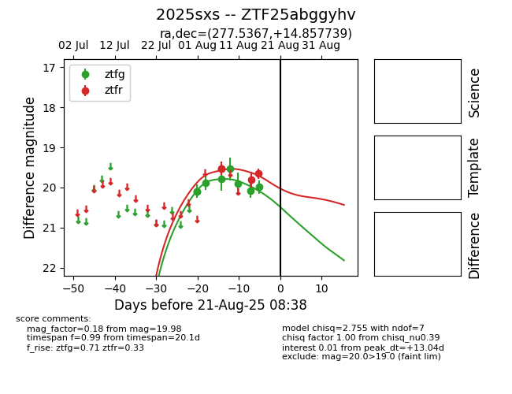

Target 2025sxs at 2025-08-21 08:38, see:
FINK: fink-portal.org/ZTF25abggyhv
Lasair: lasair-ztf.lsst.ac.uk/objects/ZTF25abggyhv
ALeRCE: alerce.online/object/ZTF25abggyhv
TNS: wis-tns.org/object/2025sxs
YSE: ziggy.ucolick.org/yse/transient_detail/2025sxs
alt names
ZTF25abggyhv (ztf,alerce)
2025sxs (tns,yse)
coordinates:
equatorial (ra, dec) = (277.5367,+14.85774)
galactic (l, b) = (43.9465,+11.34546)
photometry
last ztfg=19.98, ztfr=19.65
8 ztfg, 4 ztfr detections
